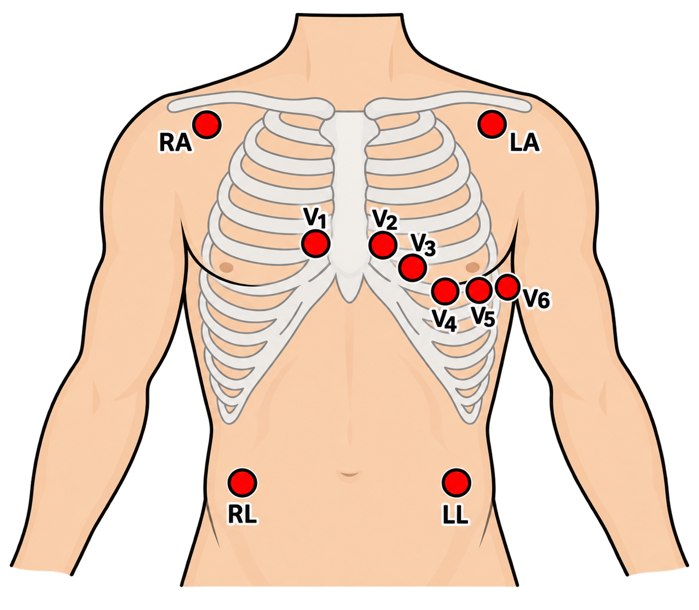
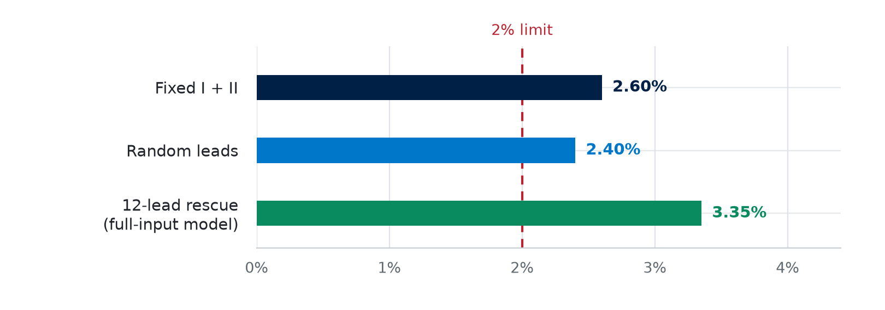

Diagnosis-Specific Selective Prediction
for Safe Reduced Lead ECG AI

Portable ECG expands access, but average accuracy does not show which decisions are safe to automate.
Can leads I + II rule out AFIB or AFLT with accepted-negative error below 2%?
Control the input. Separate the patients.
per lead→Lead + time
attention→Diagnostic
heads
Matched comparison: fixed I + II, random-lead and fixed 12-lead models use the same transformer, data and seed. Fixed and random test on I + II; rescue uses all 12 leads.
Require evidence before accepting a call.
Risk = P(disease present | accepted negative). AFIB/AFLT rule-out: validation upper error bound ≤ 2% (research placeholder); otherwise escalate.
One outcome-blind ECG per patient. Split fold 9 for calibration, two-lead threshold selection and rescue selection.
Statistical safeguard: exact one-sided binomial bounds, corrected across 101 thresholds × four policy families [3]. Policies frozen before test export.
Performance depends on the diagnosis.
AUROC by training strategy · higher is better

Ranking did not enable automation.
Validation upper error bound · lower is better

| Risk limit | Training | Ruled out at 2 leads | Escalated → Expert | Missed / 118 AFIB-AFLT | Error in ruled-out |
|---|---|---|---|---|---|
| 3% | Fixed I + II | 1,400 (73.5%) | 504 (26.5%) | 10 / 118 (8.5%) | 10 / 1,400 (0.71%) |
| 3% | Random leads | 1,604 (84.2%) | 300 (15.8%) | 13 / 118 (11.0%) | 13 / 1,604 (0.81%) |
| 5% | Fixed I + II | 1,586 (83.3%) | 318 (16.7%) | 22 / 118 (18.6%) | 22 / 1,586 (1.39%) |
| 5% | Random leads | 1,704 (89.5%) | 200 (10.5%) | 25 / 118 (21.2%) | 25 / 1,704 (1.47%) |
At 5%, more patients are ruled out, but 22–25 of 118 AFIB/AFLT cases are missed. Twelve-lead rescue accepted no further cases.
N = 1,904 patients. The relaxed limits are post-hoc sensitivity analyses, not clinical targets.
A reliability map with abstention.
The policy reports automation and misses together under frozen, diagnosis-specific limits [2].
Proof bottleneck: rescue fits saw 47–115 patients; 2% proof needs ≥446 error-free accepts. Calibration data, not accuracy, is the bottleneck.
Feasibility evidence, not clinical validation.
One seed, previously inspected test data and sparse subgroups limit certainty. Hospital ECGs do not reproduce wearable recordings.
Complete seeds 43/44, then test a frozen policy on an untouched external cohort and real two-lead devices.